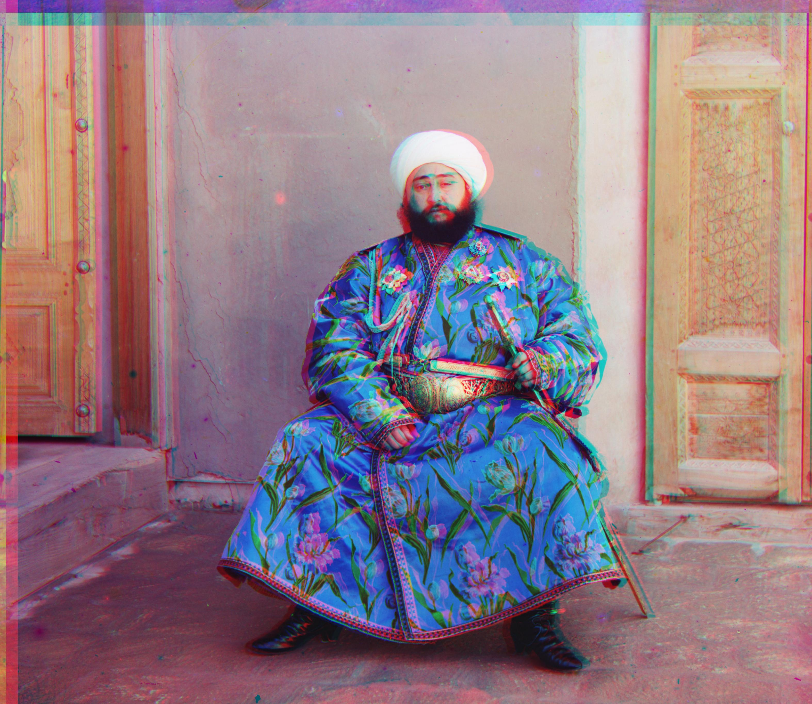
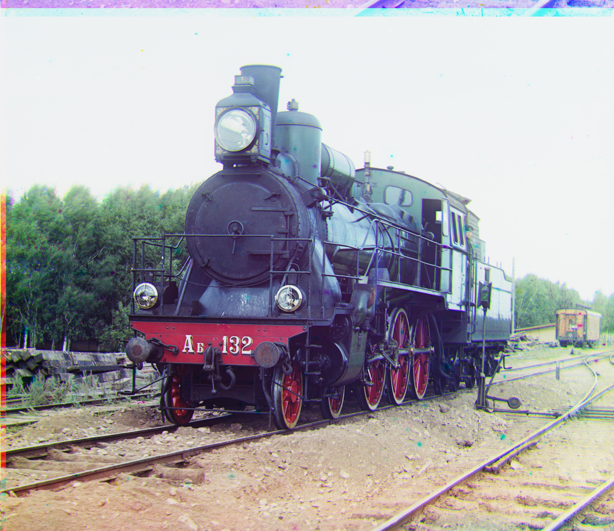

This section features images that are restored using a prymaid method. Starting from a blurred down version of the pictrues, it finds the best local alignment by sweeping the offset from only -1 to 1, then goes up in resolution then do the same. Some blurryness were fixed by normalizeing the colors before hand, but the emir remains somewhat blurry.
church
green shift: (25, 4) red shift: (58, -4)

emir
green shift: (49, 24) red shift: (99, 69)
harvesters
green shift: (60, 17) red shift: (124, 14)
icon
green shift: (41, 17) red shift: (89, 23)
lady
green shift: (49, 9) red shift: (112, 11)
melons
green shift: (81, 9) red shift: (178, 12)
onion_church
green shift: (51, 27) red shift: (108, 37)
sculpture
green shift: (33, -11) red shift: (139, -26)
self_portrait
green shift: (79, 29) red shift: (176, 37)
three_generations
green shift: (54, 14) red shift: (112, 11)

train
green shift: (42, 4) red shift: (86, 31)
custom_image_1
green shift: (32, 0) red shift: (134, -1)
custom_image_2
green shift: (38, 21) red shift: (76, 35)